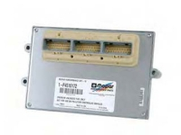

2003 - 2006 Viper SRT10 Power Kit Race Engine Controller - P4510172AB
| Part number | P4510172AB |
|---|---|
| Fits years | 2003-2006 |
| Models | Viper, SRT10 |
| Condition | Discontinued |
| Category | Mopar Performance Parts |
Description
The Mopar Race Engine Controller for the 2003-2006 Viper SRT10 is specifically calibrated for use with the Race Camshaft (P4510171) and the Viper 3-inch Race Exhaust (P4510176). It optimizes fuel and air tables for peak performance without catalytic converters, removes the skip shift feature (found on the production model), and is calibrated for premium pump fuel (91 octane minimum). For race use only.
IMPORTANT NOTICE: This device is not legal for use on pollution-controlled vehicles certified for use on streets or highways. Once this device is installed, use of the vehicle on a street or highway is a violation of the Clean Air Act, potentially subjecting the operator and the installer to civil penalties of up to $32,500 per vehicle depending on the circumstances.
Mopar Part #P4510172AB
DISCONTINUED BY DODGE, But JonB at PartsRack Has Em, and you can KEEP your OE PCM! (no core!)
Email: JonB@PartsRack.com
Archived 2026-04-22 · view original capture
More in Mopar Performance Parts


 Out of stock
Out of stock